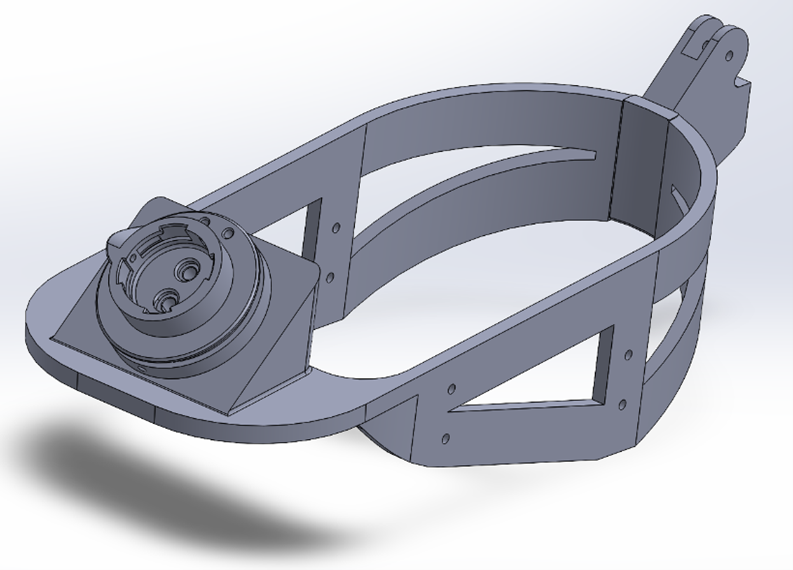
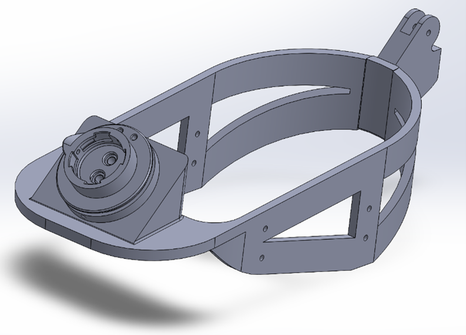

Projects
Surface Modeling of Demo Model Gimbal - Hoverfly Tech.
Utilizing advanced surface modeling techniques, I successfully designed and manufactured six demonstration gimbals, which were subsequently integrated into a variety of drone platforms. The assembly process included testing and refinement, ensuring that each gimbal met quality and performance standards before deployment in real-world applications.
Keepout Area and Curved Leg Design - Hoverfly Tech.
I developed a custom keep-out area and redesigned the drone landing legs to accommodate a company-supplied gimbal. This process involved meticulous measurement of the distance between the drone's landing legs and the gimbal to ensure optimal integration and functionality. To facilitate clear communication and visualization of the design, I created a detailed assembly model incorporating all relevant components. This comprehensive approach allowed for effective collaboration with the company, demonstrating the enhanced drone configuration and its capabilities.
Shin and Calf Cuff Component - WEAR Lab


I created a detailed 2D drawing of the shin and calf cuff and took precise measurements of the bare wire to facilitate its integration into the design. This design enables a seamless connection between the lower limb and the upper limb of the suit. Following this, I developed the cuff in SolidWorks and 3D printed a prototype for testing.
Ankle Component of Exosuit for WULL - WEAR Lab
 

The process of designing and prototyping the ankle component of our exosuit is displayed above. I began by drafting a precise 2D blueprint, with each component measured using a caliper for accuracy. The redesigned 3D model incorporates an attached ratchet, allowing the bare wire to feed through and connect seamlessly with the rest of the suit.
CAD Car Drag and Air Flow Project - EML3303C

The image showcases the 3D-printed CAD model of a car designed for testing drag force and airflow dynamics in a wind tunnel. Drawing inspiration from the Tesla Cybertruck, the model was crafted using metallic additive manufacturing techniques to ensure precision and durability. The streamlined, aerodynamic shape is engineered to minimize drag, optimizing the vehicle’s performance in wind conditions. To ensure stability during testing, the model is securely fastened in the wind tunnel using a paperclip, allowing for precise measurements of drag force and airflow characteristics.